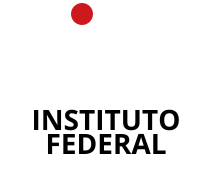

Prof. Dr. Davi Franco Rêgo
Assessor de Ciência de Dados – PRPGI
portal.ifba.edu.br/prpgi/dashboards-1/dashboards
25 campi • ~2.000 pesquisadores ativos • Dezenas de programas de pós-graduação
Abas do painel de dados:
Produção Científica Produção Técnica Inovação Grupos de Pesquisa Pesquisadores Orientações Pós-Graduação Iniciação Científica
Cada aba contém KPIs, gráficos, mapas e tabelas detalhadas com exportação para Excel
Pipeline:
dados/ organizados por fontenode scripts/build.js lê todos os arquivos e gera data.jsonBAR-2000-2026.xlsx
coletor_dgp_ifba.csv
alunos_pos_*.csv
| Camada | Tecnologia | Papel |
|---|---|---|
| 📊 Visualização | Chart.js 4.4 | Gráficos interativos (linha, barra, pizza) |
| 🗺️ Mapas | Leaflet.js 1.9 | Mapas georreferenciados com clusters |
| 📋 Processamento | SheetJS (xlsx) | Leitura de Excel no Node.js e no browser |
| ⚙️ Build | Node.js + Jest | Pipeline ETL + testes unitários |
| 🎨 UI | Vanilla CSS | Estilização responsiva, variáveis CSS |
| 🚀 Deploy | GitHub Pages | Hospedagem estática e gratuita |
Zero dependências de backend. Tudo roda no navegador após o build.
| Característica | Benefício |
|---|---|
| 🏗️ Arquitetura estática | Zero custo de servidor, deploy via GitHub Pages |
| 🔄 Desduplicação inteligente | Coautorias entre servidores não inflam os números |
| 📐 Métricas relativas | Comparação justa: produção por servidor ativo |
| 🎯 Análise de coortes maduras | Evita comparar turmas recentes com programas consolidados |
| 📦 ETL automatizado | De dezenas de planilhas para um JSON unificado |
| 🧪 Testes unitários | Jest cobre funções puras do build e do frontend |
| 📱 Responsivo | Funciona em desktop, tablet e mobile |
| 🔌 Pronto para iframe | Integrável em portais institucionais |
O Painel de Dados permite à PRPGI:
| Eixo | Perguntas |
|---|---|
| 📄 Produção Científica | Qual campus mais publica? A produção está crescendo ou estagnada? Qual o perfil Qualis das publicações? Quais áreas concentram mais artigos? |
| 🔬 Grupos de Pesquisa | Onde estão os grupos de pesquisa? Quantos pesquisadores e estudantes cada grupo mobiliza? Quais áreas do conhecimento predominam? |
| 🎓 Pós-Graduação | Qual programa tem maior taxa de evasão? Qual a taxa de conclusão por coorte? Onde há pendência ativa que exige intervenção? |
| 🧪 Iniciação Científica | Quantos projetos IC temos por campus? Qual a distribuição entre PIBIC, PIBITI e outras modalidades? De onde vem o fomento? |
| 👥 Pesquisadores | Quantos pesquisadores ativos temos? Qual o perfil de produção por campus? A base de pesquisadores está crescendo? |
| 💡 Inovação | Quantas patentes e registros de software o IFBA produziu? Quais campi se destacam em propriedade intelectual? |
| Prioridade | Melhoria | Status |
|---|---|---|
| 🔴 Alta | Automação completa dos scrapers (pipeline CI/CD) | Planejado |
| 🔴 Alta | Indicadores de extensão universitária | Planejado |
| 🟡 Média | Integração com API do Lattes (em substituição a exportações manuais) | Estudo |
| 🟡 Média | Painel de dados de programas de pós-graduação individuais | Planejado |
| 🟢 Baixa | Modo escuro e personalização de temas | Ideia |
🔗 portal.ifba.edu.br/prpgi/dashboards-1/dashboards
Código-fonte: github.com/prof-davifr/dashboard-prpgi
Tecnologias: Chart.js • Leaflet • SheetJS • Node.js • GitHub Pages
Prof. Dr. Davi Franco Rêgo
Assessor de Ciência de Dados – PRPGI
Painel de Dados da PRPGI – IFBA